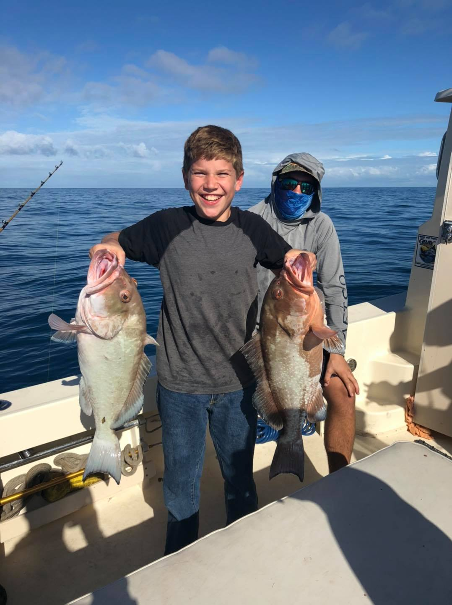
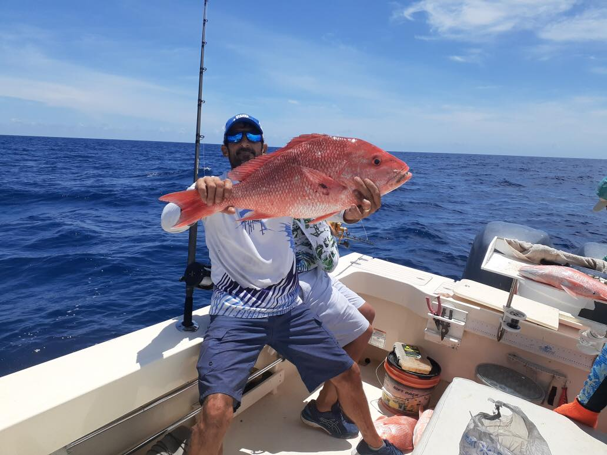
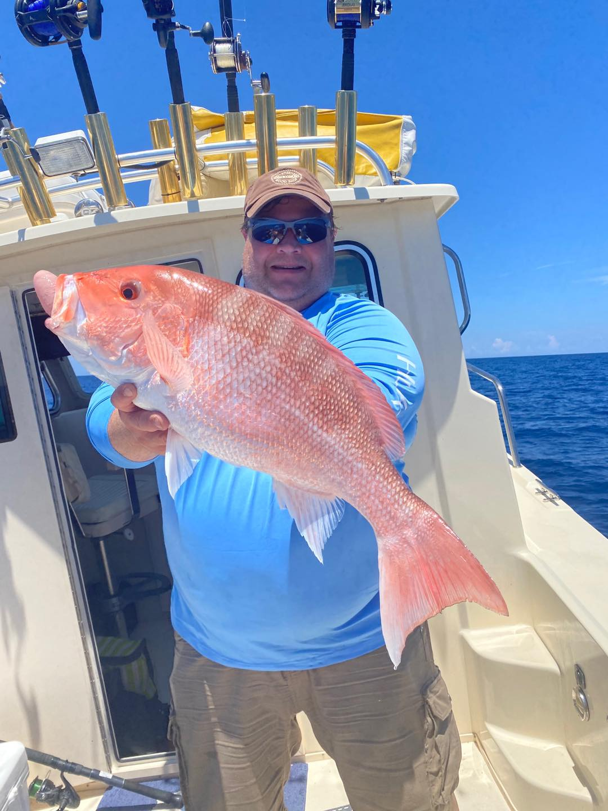
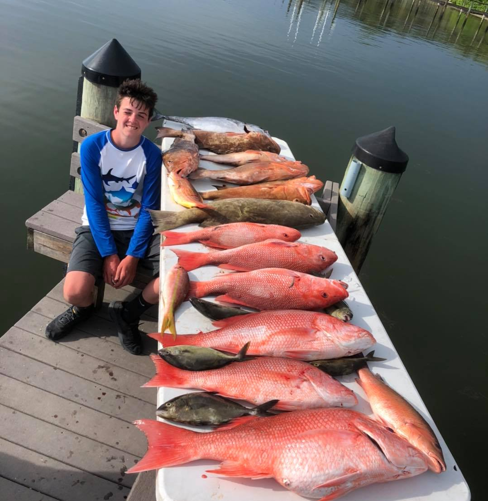
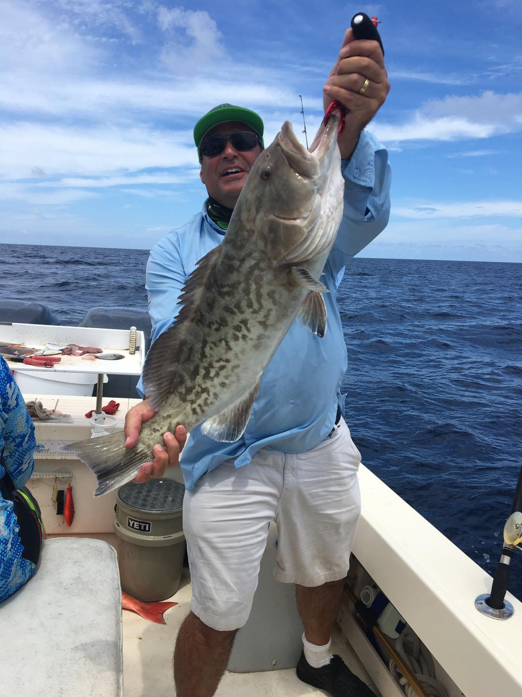
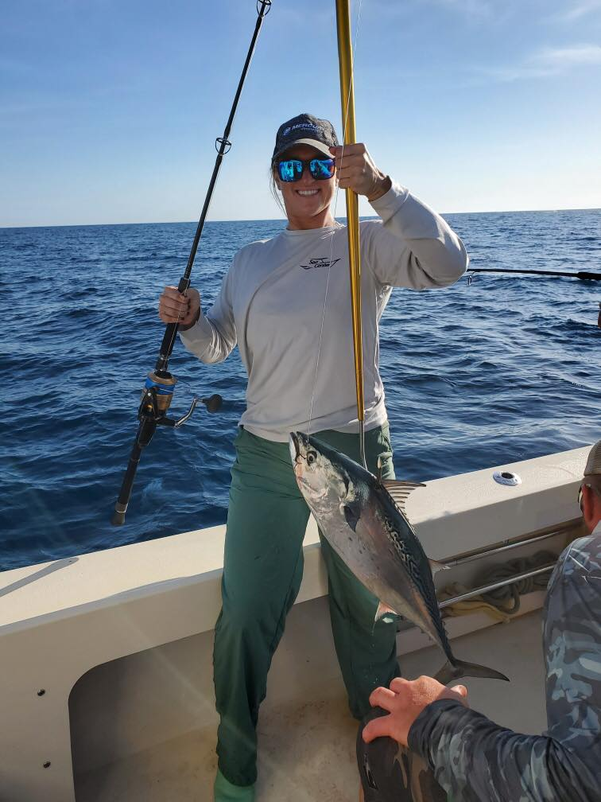

$595 for 1/2 of a day
- 1/2 day is a 4 hour trip that we target all types of species and can run up 15 miles or so offshore depending on the seas

$895 for 3/4 of a day
- The 3/4 day is a 6 hour minimum trip that we usually catch bottom fish like
Red and Gag Grouper as well as lots of various types of snapper and depending on the time of year anything
from Sharks to Goliath grouper to King Mackerel to Bonita to Blackfin tuna to Spanish mackerel to Cobia can be caught as we
ll. It’s a great trip to get a good amount of eating fish and have time to try possibly a couple different techniques like trolling and bottom fishing. Usually fish from 12 to 35 miles out.

$1,195 Full day 8 hours
- The Full Day 8 hour minimum is a great way to go after our Limit of Red Grouper as well as Lots of various snapper like mangrove, lane, vermillion. Porgies and lots of other fish. We are at the depth for Blackfin tuna and the possibilities for much bigger Red And Gag Grouper and usually catch our Red Grouper limits on this trip and lots of other fish.
All the fish references on 3/4 day are catchable on 8 hour full day. Great trip to fill the freezer. Usually start from 20-40 miles out.

$1,395 Extended full day
- Our 10 hour Trip is an excellent trip for the avid fishermen or group that wants the full experience to go after limits of big Red Grouper, Red Snapper when in season, as well as lots of other fish as referenced before.
Usually start at the 30-60 mile range and catch bigger fish.

$1,595 12 Hour Deep Dive trip
- The 12 hour is a great trip to go for all of the above and is the go to Red Snapper and Red Grouper limit trip for the big fish and also gives you a great shot at lots of deep water Pelagics. Other fish like big scamp grouper, Red and Jolthead porgies. Lots of other stuff. And if Amberjack are in season it’s a great trip to limit on red grouper catch some other types like scamps, lots of mangroves and Red Snapper limits if they are in season to keep and then attack Amberjack or go for Blackfin Tuna.The 12 hour is a great trip to go for all of the above and is the go to Red Snapper and Red Grouper limit trip for the big fish and also gives you a great shot at lots of deep water Pelagics. Other fish like big scamp grouper, Red and Jolthead porgies. Lots of other stuff. And if Amberjack are in season it’s a great trip to limit on red grouper catch some other types like scamps, lots of mangroves and Red Snapper limits if they are in season to keep and then attack Amberjack or go for Blackfin Tuna.

$2,000 2 Day limit trips available as well
- The 2 day limit and overnight trips are a call in advance trip as they are essential for the novice or new to the area fisherman to maximize their productivity when they are spending all ghat time and money to keep up on a boat and go offshore. I also will work with freedom boat club members and show them the tricks they can use to bring their own transducer and unit so they can find fish on a boat that’s not theirs.
